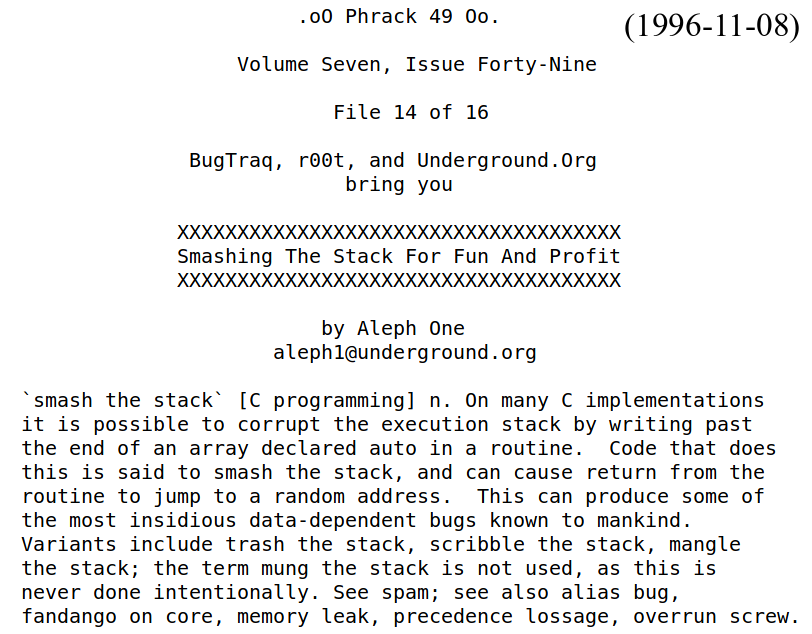

Taesoo Kim
Taesoo Kim

Idea in C/C++: if we implement everything correctly, we have opportunities to make the program much efficient (in terms of memory usage) and faster (in terms of execution speed)!
The strcpy() function copies the string pointed to by src, including the terminating null byte (‘\0’), to the buffer pointed to by dest. The strncpy() function is similar, except that at most n bytes of src are copied.
void encodes(VALUE str, const char *s, long len ...) {
char buff[4096];
while (len >= 3) {
while (len >= 3 && sizeof(buff)-i >= 4) {
buff[i++] = ..; /* 4 times */;
s += 3; len -= 3;
}
if (sizeof(buff)-i < 4) { /* flush */ }
}
if (len == 2) { buff[i++] = ...; /* 4 times */ }
else if (len == 1) { buff[i++] = ...; /* 4 times */ }
if (tail_lf) buff[i++] = '\n';
/* flush */
}$ ./check-func.py ssp-all func1_benign
func1_benign()@ssp-all
push rbp
mov rbp,rsp
sub rsp,0x20
mov DWORD PTR [rbp-0x14],edi
! mov rax,QWORD PTR fs:0x28 // read canary @TLS
! mov QWORD PTR [rbp-0x8],rax // put it right above fp
! xor eax,eax // clear it off
mov eax,DWORD PTR [rbp-0x14]
! mov rdx,QWORD PTR [rbp-0x8] // fetch canary on stack
! xor rdx,QWORD PTR fs:0x28 // compare it with @TLS
! je func1_benign+0x31
! call __stack_chk_fail@plt // stack smashed!
leave
ret/* Don't pass down __libc_argv[0] if we aren't doing
backtrace since __libc_argv[0] may point to the
corrupted stack. */
__libc_message (need_backtrace ?
(do_abort | do_backtrace) : do_abort,
"*** %s ***: %s terminated\n",
msg,
(need_backtrace && __libc_argv[0] != NULL
? __libc_argv[0] : "<unknown>"));$ cat /proc/self/maps
5606bdf09000-5606bdf0b000 r--p /usr/bin/cat
5606bdf0b000-5606bdf0f000 r-xp /usr/bin/cat
5606bdf13000-5606bdf14000 rw-p /usr/bin/cat
...
5606bef45000-5606bef66000 rw-p [heap]
7ffcd93c8000-7ffcd93ea000 rw-p [stack]
7ffcd93f7000-7ffcd93fa000 r--p [vvar]
7ffcd93fa000-7ffcd93fc000 r-xp [vdso] (top) +--------------+
| v XXXX
<stack> : [buf][canary][fp][ra][var][canary][fp][ra] ... (@rsp)
<shadow> : [ra] [ra] ... (@gs) (top)
<stack> : [buf][canary][fp][ra][var][canary][fp][ra] ... (@rsp)
<safe> : [fp][ra][fp][ra] ... (@rsp)
<unsafe> : [buf][canary][var][canary] ... (@fs)
======> overflow doesn't affect fp/ra + other sensative data$ cd lec01-stackovfl/safestack
$ make check-safestack
-vuln()@safestack-no
+vuln()@safestack-yes
push rbp
mov rbp,rsp
- sub rsp,0x40
+ sub rsp,0x20
+ mov rax,QWORD PTR [rip+0x8271] ; read the base of stacktop
+ mov rcx,QWORD PTR fs:[rax] ; fetch stacktop
+ mov rdx,rcx
+ add rdx,0xffffffffffffffd0 ; allocate
+ mov QWORD PTR fs:[rax],rdx ; update stacktop